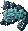
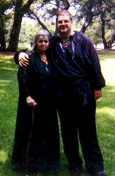

 |
||
 |
||
Bright Greetings. We are Tyr and Sequanah. On these pages you will find information about The Craft of the Wise, about our Tradition, 1734, and about how our religion is and has been celebrated, today and yesterday. You will find our own writings, as well as articles of interest written by others.
The two of us have an avid interest in the history of the Craft and the custom and lore surrounding it. We share a need to unearth and provide accurate information to our fellow Crafters. Wychwood is our dream and our fantasy. A place where all may meet and where information and knowledge may be shared. A place that is unlimited by the mundane laws of space and time.
We have been married for ten years, are High Priest and High Priestess of Coven Ashesh Hekat, are active in our Local Council of Covenant of the Goddess and are absolutely in love with the little spiny animals called hedgehogs! (Visit the hedgehog burrow in the Sacred Wood for more information about our little familiars)!

| Spring | ||||
| Candlemas | Beltane | |||
| Yule | Midsummer | |||
| Hallows | Lammas | |||
| Harvest |
The Old Gods
Tyr
Sequanah
Hecate
Tubal Cain
Pan
Kernunnos
Other Articles
The 1734 Tradition
Origins of 1734 in the Americas - Part 1 - Introduction
The Published Writings of Robert
Cochrane
Initiation: It's Power and Purpose
Q+A: Neo-Pagan Traditions
Priests
The Crone
About the History of the Craft
About Ritual
About Craft Dogma
Gods, Myths, and Reality
Exegesis on the Wiccan Rede
The Song of the Faith
The Song of the Stag
The Nature of Myth
Stories
Kipling - The Knife and the Naked Chalk
Hawthorne - The May-Pole of Merry Mount
The Legend of the Rainbow Bridge
The Voyage of Bran